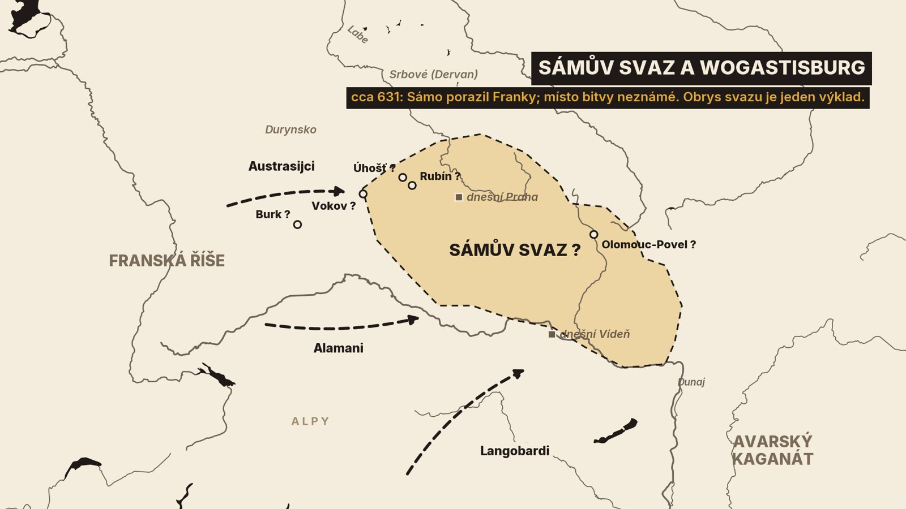
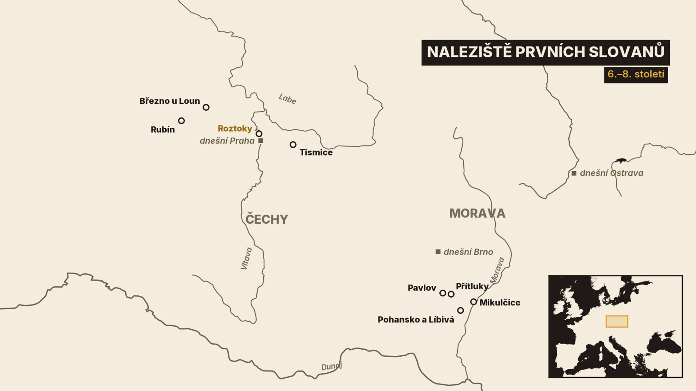
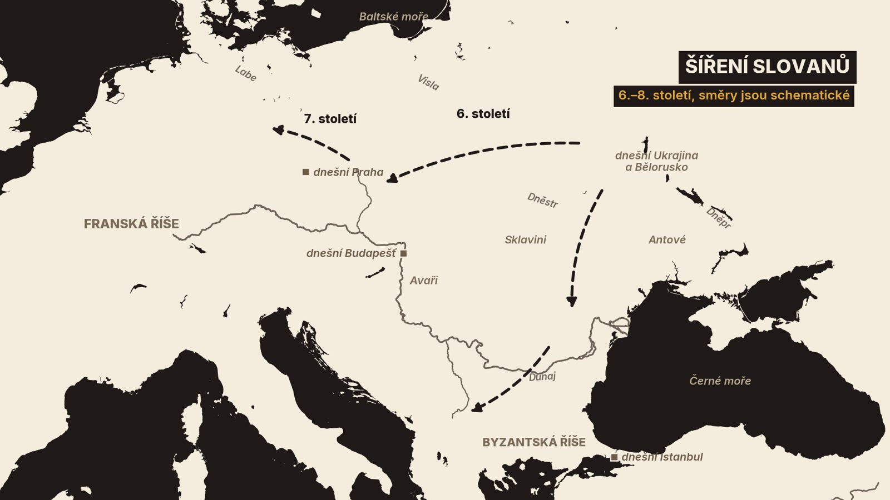

1. Posel u Sáma
Před slovanským vládcem stojí posel franského krále Dagoberta. Jmenuje se Sicharius a přišel si stěžovat[1]. Slované prý v zemi toho vládce zabili franské kupce a pobrali jim zboží[1]. Vládce ho nejdřív nechtěl vůbec přijmout. Sicharius se proto převlékl do slovanských šatů a tak se před něj dostal[1].
Jednání dopadlo špatně. Kronikář sám píše, že si posel počínal hloupě. Začal vyhrožovat a tvrdil, že vládce i jeho lid jsou králi povinni službou[1]. Vládce podle kroniky odpověděl smířlivě: země i lidé patří Dagobertovi, pokud s nimi král zachová přátelství[1]. Na to posel prohlásil, že křesťané, služebníci Boží, se nemohou přátelit se psy[1]. Odpověď, kterou kronika vkládá vládci do úst, je ostrá. Jste-li vy Boží služebníci a my Boží psi, pak vás smíme trhat zuby, dokud jednáte proti Bohu[1]. Posla vyhnali[1].
Jste-li vy služebníci Boží a my Boží psi, pak dokud vy stále jednáte proti němu, máme dovoleno trhat vás zuby.
Ten vládce se jmenoval Sámo. Podle téže kroniky to nebyl Slovan, ale kupec z Franské říše[1]. Kronika klade tu scénu do devátého roku Dagobertovy vlády[1]. Vydavatel kroniky k tomu připsal rok 631, možná až ten následující[1].

Celý příběh známe z jediného vyprávění. Zapsala ho franská kronika, které se říká Fredegarova[19]. Psal ji tedy člověk z druhé strany sporu. O Sámovi nemáme skoro nic jiného než několik zmínek ve franských pramenech[19].
Kdo byli lidé, kterým Sámo vládl? Kdy a odkud přišli? V tomto díle projdeme tři století, od 6. do 8. století.
Budeme přitom pořád rozlišovat tři vrstvy. První je archeologie: co se našlo v zemi. Druhá jsou písemné prameny: co o Slovanech napsali jejich současníci, většinou cizinci a často nepřátelé. Třetí jsou pozdější pověsti. A právě jednou pověstí začneme.
2. Pověst a první stopy
Tu pověst zná každý. Praotec Čech přivede svůj lid k hoře Říp a země dostane jeho jméno. Nejstarší zápis najdeme v Kosmově kronice. V latinském textu se stařešina jmenuje Boemus a jeho druhové mu říkají, že se země má jmenovat po něm[6].
Poněvadž ty, otče, sloveš Boemus, ať se i země nazývá Boemia.
Kosmas psal svou kroniku v letech 1119 až 1125[22]. Od doby prvních Slovanů ho tedy dělilo zhruba pět set let. U nejstarších dějin vycházel z ústního podání, sám mluví o báječném vyprávění starců[23]. A místo u Řípu uvádí se slovy „jak se domnívám“[6]. Je to tedy pověst zapsaná ve 12. století, ne zpráva o příchodu Slovanů. A jméno Čech dostal praotec až v česky psané Dalimilově kronice ze začátku 14. století[25].
Co víme z nálezů? Před Slovany žili v našich zemích Germáni, naposledy Langobardi. Ti odešli roku 568 z Podunají do severní Itálie[11]. Archeologové kladou konec doby stěhování národů do druhé poloviny 6. století. Tehdy většina germánských obyvatel odchází k Dunaji a někteří dál do severní Itálie. A do Čech postupně pronikají první skupiny Slovanů[11].
Poznáme je podle nádob. Jsou vyrobené v ruce, bez hrnčířského kruhu, a většinou nemají žádnou výzdobu[13]. V roce 1940 je popsal archeolog Ivan Borkovský a nazval je pražský typ[13]. Odtud název kultura s keramikou pražského typu. K ní patří osady ze zahloubených chat a žárové hroby, tedy hroby se spálenými ostatky[18].
A kdy přesně Slované přišli? Tady se odborníci rozcházejí. Na Moravu podle jedněch nejpozději před polovinou 6. století. Podle historika Dušana Třeštíka už ve třicátých letech téhož století[13]. Archeoložka Dagmar Jelínková je opatrnější. Nejstarší nálezy, které se na Moravě daří datovat, ukazují na přelom 6. a 7. století[12]. Lidé ale museli přijít dřív, než jejich dům zanikl a než do hrobu uložili předmět, který dnes umíme datovat. Proto Jelínková uvažuje o postupném osídlování Moravy v poslední třetině 6. století[12].

Proč takový rozptyl? Radiokarbonové datování jednoho domu z Pavlova na Břeclavsku dalo rozpětí delší než sto let[12]. A drobné kovové předměty, podle kterých se dá datovat přesněji, jsou v nejstarších slovanských nálezech vzácné[12].
Nevíme ani, jestli se příchozí potkali s posledními Germány. Na Moravě se styk Slovanů s nejpozdějším langobardským osídlením archeologicky doložit zatím nepodařilo[12]. Konec germánského a začátek slovanského osídlení tak zůstává předmětem výzkumu[11].
Lépe než příchod známe to, jak ti lidé bydleli.
3. Roztoky: jak žili
Roztoky u Prahy, levý břeh Vltavy. Na úzkém pruhu u řeky tu archeologové zachytili stovky zahloubených domů z 6. až 7. století[7]. Po posledním velkém výzkumu jich je známo přes 330[8]. Celkem jich na místě mohlo být až tisíc[7]. Sídliště je dlouhé víc než půldruhého kilometru[8].
Proč právě tady, nevíme. Archeologové sami píšou, že vysvětlení je stále záhadou[7]. Pravděpodobně tu žila nezvykle velká komunita, která se vedle zemědělství věnovala i řemeslům, obchodu nebo lodní dopravě[7].
Jak takový dům vypadal? Dřevo se v roztocké půdě nedochovalo. Zůstaly jámy po kůlech a hlavně kamenné pece[9]. Našly se tu nádoby pražského typu, hřeben z parohu a také dvojice mlýnských kamenů na obilí[7]. Dnes přes sídliště vede železnice a silnice[7].
Představu o stavbách dává Březno u Loun. Velký výzkum tam odkryl osady z doby stěhování národů i z raného středověku[10]. Od roku 1981 na místě vzniká archeologický skanzen. Domy v něm stojí na půdorysech odkrytých při výzkumu a stavěly se starými technikami a replikami nástrojů. Archeologové v nich zkoušeli i bydlet[10]. Pořád jsou to ale novodobé rekonstrukce, ne dochované stavby.
A hroby? První Slované své mrtvé spalovali. Největší dosud známé žárové pohřebiště s keramikou pražského typu leží v Přítlukách na jižní Moravě[12]. Údaje o počtu hrobů se liší, od 436 až po pět set[12]. V hrobech bylo jen málo věcí: skleněné korálky, úlomky hřebenů, přesleny, železné přezky a nožíky[12].
To je archeologie. A co napsali současníci? Jméno Slovanů se v písemných pramenech poprvé objevuje v 6. století v Konstantinopoli[18]. Byzantský historik Prokopios o Slovanech píše, že jim nevládne jeden muž a že o společných věcech rozhodují všichni[4]. Bydlí prý v ubohých chýších daleko od sebe a často mění místo[4]. Věří v jednoho boha, tvůrce blesku, a obětují mu dobytek[4]. Jiný autor té doby, Jordanes, dodává, že místo měst mají bažiny a lesy[3].
Místo měst mají bažiny a lesy.
Oba ale píšou o Slovanech daleko od nás. Jordanes je klade k řece Dněstru a na sever až k Visle[3]. Prameny té doby znají Slovany nejdřív severně od dolního Dunaje[18]. A oba autoři se na ně dívají zvenčí. Ve střední Evropě dokládá Slovany písemný pramen nejpozději v první polovině 7. století. Je to právě Fredegarova kronika[17].

Odkud tedy přišli? Na to se nově pokouší odpovědět genetika.
4. Odkud přišli: co říká DNA
Spor je starý. Jedni badatelé mají za to, že se Slované do střední Evropy přistěhovali, nejčastěji z území dnešní Ukrajiny a Běloruska[17]. Druzí namítají, že se mohl šířit hlavně jazyk a způsob života a že místní lidé zůstali[17][18]. Střepy to nerozhodnou. Nádoba neřekne, jakou řečí mluvil její majitel[17].
Pomoci může DNA z kostí. Jenže první Slované své mrtvé spalovali, a tak z nejdůležitějšího období vzorky chybějí[17][18].
V roce 2025 vyšly dvě studie, které tu mezeru zmenšily. První zpracovala DNA více než pěti set lidí, hlavně z východního Německa, z Polska a severozápadní Ukrajiny a ze severozápadního Balkánu[18]. Podle ní se mezi 6. a 8. stoletím přesunulo z východní Evropy velké množství lidí. Ve východním Německu, v Polsku a v Chorvatsku nahradili přes osmdesát procent původního genofondu[18]. Autoři zároveň upozorňují, že kraj od kraje to probíhalo jinak[18].
Druhá studie se týká přímo jižní Moravy. Přečetla DNA osmnácti lidí ze dvou míst u Břeclavi, z Líbivé a z Pohanska[17]. Kostry pocházejí z 5. až 10. století[17].
Výsledek? Lidé pohřbení v 5. století se geneticky výrazně liší od těch pozdějších[17]. Ke změně došlo nejpozději do začátku 8. století[17]. Podle autorů se to neslučuje s představou, že tu prostě dál žili potomci starších obyvatel[17]. K nejstarším vzorkům z novější skupiny patří novorozené dítě z Pohanska. Bylo pohřbeno nespálené, někdy v 7. až 8. století[17]. A od té doby až do 10. století už studie velkou změnu nevidí[17].
Autoři sami uvádějí, co jejich výsledek neříká. Jakou řečí příchozí mluvili, z genů nepoznáme[17]. Nedá se zatím říct, kolik jich bylo ani jak rychle přišli[17]. A dodejme sami: osmnáct lidí ze dvou sousedních pohřebišť není celá země.
Do příběhu teď vstupuje mocný soused z východu.
5. Avaři a kupec Sámo
V šedesátých letech 6. století přišli do Karpatské kotliny Avaři, kočovníci ze středoasijských stepí[19]. Jejich říše na středním Dunaji vydržela až do doby kolem roku 800[18]. Pod avarskou nadvládu se dostalo mnoho Slovanů[18].
Jak ta nadvláda vypadala, líčí Fredegarova kronika. Avarům říká Hunové a Slovanům Vinidové[1]. Avaři prý každý rok přicházeli ke Slovanům přezimovat, brali si jejich ženy a dcery a vybírali poplatky[1]. V bitvě nechávali bojovat Slovany a sami stáli před táborem. Když Slované vítězili, šli si Avaři pro kořist[1]. Kronika k tomu uvádí slovo befulci, kterým prý Avaři Slovany označovali. Co přesně znamenalo, jisté není. Výklad, který nabízí sám kronikář, vydavatel kroniky odmítl[1].
Je to jediný pramen a píše ho cizinec. Archeolog Jiří Košta připomíná i druhou stranu. Slované se s Avary podíleli na výpravách proti Byzanci a ten vztah pro ně nemusel být vždy nevýhodný[19].
Podle kroniky se nakonec vzbouřili synové Avarů a slovanských žen[1]. A právě tehdy přichází Sámo. Kronika to klade do čtyřicátého roku vlády krále Chlothara, tedy do let 623 až 624[1][19]. Dvojí letopočet neznamená dvě události. Kronika počítá roky od nástupu krále a s naším kalendářem se nekryjí[19]. Sáma představuje jedinou větou: člověk jménem Sámo, rodem Frank z kraje Senonago[1].
Člověk jménem Sámo, rodem Frank z kraje Senonago
Kde ten kraj ležel, jisté není. Vydavatel kroniky Bruno Krusch dával přednost okolí města Sens ve Francii a kloní se k němu i Košta[1][19]. Jiní badatelé hájí Soignies v dnešní Belgii[1][24]. Spor se vede i o to, jestli byl Sámo opravdu Frank. Pozdější bavorský spis ho má za Slovana[24].
Sámo přijel s dalšími kupci obchodovat[1]. S čím, kronika neříká[1][24]. Přidal se ke slovanskému vojsku a osvědčil se tak, že si ho Slované zvolili za krále[1]. Vládl prý pětatřicet let[1]. Měl dvanáct slovanských manželek[1]. S nimi měl dvaadvacet synů. A k tomu patnáct dcer[1]. Všechna ta čísla jsou Fredegarova a ověřit je nemáme čím[19].
Proč si Slované zvolili cizince? Košta nabízí vysvětlení. Sámo stál mimo vazby mezi jednotlivými slovanskými skupinami, a tak se pod ním mohly sjednotit[19]. Je to výklad badatele, ne zpráva pramene.
O několik let později narazil Sámo na Franky.
6. Wogastisburg
Vracíme se k poslu Sichariovi. Když ho Sámo vyhnal, poslal král Dagobert proti Slovanům vojsko z Austrasie, jedné z částí své říše[1].
Podle kroniky táhlo ve třech proudech[1]. Proti Slovanům vyrazili také Langobardi, podle obvyklého výkladu za Dagobertův plat[1][24]. Alamani pod vévodou Chrodobertem zvítězili a Langobardi také. Oba si odvedli mnoho zajatců[1]. Austrasijci ale oblehli pevnost, kterou kronika jmenuje Wogastisburc. Bránil ji silný oddíl Slovanů[1]. Bojovalo se tři dny. Pak Frankové utekli[1].
Tři dny bojovali, mnozí z Dagobertova vojska tam byli pobiti mečem a pak se na útěku vrátili domů, všechny stany i věci, které měli, zanechali.
Kronikář má pro porážku vlastní vysvětlení. Nerozhodla prý ani tak statečnost Slovanů jako nechuť Austrasijců, kteří měli s Dagobertem spory[1]. I tady tedy píše Frank hlavně o franské politice.
Následky byly vážné. Slované pak opakovaně vpadali do Durynska[1][2]. K Sámovi se přidal lužickosrbský kníže Dervan, který do té doby patřil pod Franky[1][19]. A durynský vévoda Radulf později uzavřel se Slovany přátelství[2].
A kde Wogastisburg stál? To nevíme. Kronika neuvádí řeku, horu ani směr[1]. Všechno ostatní jsou návrhy badatelů.
Vydavatel kroniky v 19. století připsal s otazníkem: v údolí Ohře[1]. Anton Gnirs hledal pevnost u Vokova nedaleko Chebu[21]. Ernst Schwarz ji spojil s vrchem Úhošť u Kadaně a opřel se o podobu jména[20]. Úhošť byl dlouho nejčastější odpovědí[24]. Vrch Rubín u Podbořan navrhli archeologové Lutovský a Profantová a za nejpravděpodobnější ho má i Jiří Košta[24][19]. Jako další možnost uvádí Košta hradiště v Olomouci-Povelu[19]. A jiní hledají Wogastisburg mimo Čechy, v Horních Francích v dnešním Bavorsku. Heinrich Kunstmann a Hans Jakob navrhli Burk u Forchheimu[24].
Rubín ukazuje, jak je to těžké. Podle Košty pro něj mluví nálezy ze 7. století[19]. Naďa Profantová a Daniel Stolz ale později sepsali, co odtud z té doby skutečně známe. Jsou to dvě kování západního původu a jedno nákončí avarského typu, a ani to není jisté[14]. Kdy bylo hradiště opevněno, se neví[14]. A podle jednoho názoru nemusel být Wogastisburg vůbec hradiště, ale třeba jen lehce opevněný tábor[20].
Stejně nejistá je i sama Sámova říše.
7. Sámova „říše“
Fredegar mluví o Sámovi jako o králi Slovanů a o jeho království[1]. Sámova říše je až označení moderních historiků[19]. Spíš než stát to byl svaz kmenů, který držela pohromadě společná obrana[19].
Jak byl velký a kde měl střed? Na tom se badatelé neshodnou[24]. Jiří Košta klade střed na Moravu, do části Dolního Rakouska a na jihozápadní Slovensko. Tam podle něj povstání proti Avarům začalo[19]. Čechy podle něj ke svazu patřily také a Sámův vliv mohl sahat až do Korutan[19]. Tam kronika zná jiného slovanského vévodu, Valluka. Že by Sámovi podléhal, ale neříká[2].
Jiní badatelé hledají střed svazu dál na severozápadě: v Čechách a v Horních Francích[24]. Historik Martin Eggers ty názory shrnul v přehledové studii. Sám Moravu a Korutany ze Sámova území dokonce vylučuje[24]. Severní a východní hranici nedokáže určit ani Košta[19]. Kronika sama žádné hranice neuvádí[1]. Proto je Sámův svaz na naší mapě jen čárkovaně a jeho obrys je jen jeden z výkladů.
Proč svaz vznikl právě tehdy? Košta připomíná, že avarská říše byla v krizi. V roce 626 Avaři neúspěšně oblehli Konstantinopol a ta porážka jejich moc podlomila[19].
Sámo vládl podle Fredegara pětatřicet let[1]. Připočteme-li je k roku jeho zvolení, vychází Sámova smrt na dobu krátce před rokem 660[19]. Je to jen výpočet z Fredegarových čísel. O Sámově smrti kronika nic neříká, stejně jako o tom, kde sídlil a kde je pohřben[1].
Svaz mizí z pramenů spolu se Sámem a jeho smrt nejspíš dlouho nepřežil[19]. Košta to vysvětluje tím, že pominul důvod, proč svaz vznikl. Hrozba zvenčí zeslábla[19].
Po Sámovi nastává v písemných pramenech o našich zemích dlouhé ticho.
8. Osmé století: hradiště a Karel Veliký
Historici o té době mluví jako o době chudé na prameny[20]. Mluví za ni hlavně nálezy.
V 8. století se objevují hradiště, opevněná sídla elity[15][16]. Mikulčice na jižní Moravě byly už tehdy významným mocenským centrem[16]. Dokládají to ostruhy s háčky a bronzové ozdoby avarského původu[16]. Hroby z té doby se tam ale zatím nenašly[16].
A Čechy? Podobná místa známe i odtud. Z Rubínu u Podbořan pochází ze starých sběrů nejvíc kování avarského původu v Čechách[14]. V Tismicích východně od Prahy leží hradiště o rozloze přes 20 hektarů[15]. Našlo se tam asi 170 ozdob z barevných kovů, hlavně z opasků a koňských postrojů[15]. Některé se tu přímo vyráběly[15]. Podle radiokarbonových dat tam lidé žili od poslední třetiny 8. století[15].
Archeologové takové ozdoby řadí k předmětům, které ukazovaly moc a postavení[15]. Samo kování ale neřekne, kdo ho nosil.
Na konci 8. století avarská říše upadá[16]. A z druhé strany se k našim zemím obrací Franská říše Karla Velikého. V roce 805 poslal Karel svého syna s vojskem do země Slovanů, kterým franské anály říkají Beheimi[5]. Vojsko zemi zpustošilo a zabilo jejich vévodu jménem Lecho[5]. Jiná franská kronika mluví o třech vojscích, která se sešla na Ohři a oblehla hrad Canburg[20]. Ani u něj nevíme, kde stál[20].
Rok nato přišlo franské vojsko znovu, z Bavorska, Alamanie a Burgundska[5]. Podle análů zpustošilo nemalou část země a vrátilo se bez vážnějších ztrát[5].
A v roce 822 už stojí poslové Čechů a Moravanů s dary před císařem ve Frankfurtu[5]. Tam začne náš příští díl.
Shrňme si, co z těch tří století víme.
9. Co si odnést
Za prvé: kultura prvních Slovanů se u nás objevuje v 6. století, nejspíš v jeho druhé polovině. Přesné datum neznáme, protože stojí na střepech a na několika málo datovaných nálezech[11][12][13].
Za druhé: tito lidé žili v zahloubených domech s kamennou pecí a své mrtvé spalovali. V Roztokách u Prahy takových domů archeologové zachytili přes 330[7][8][9].
Za třetí: DNA z jižní Moravy ukazuje, že se tam mezi 5. a 8. stoletím výrazně proměnilo obyvatelstvo. Jakou řečí noví lidé mluvili, geny neřeknou[17].
Za čtvrté: o Sámovi víme skoro všechno z jediné franské kroniky. Králem Slovanů se podle ní stal v letech 623 až 624. Vládl prý pětatřicet let[1].
Za páté: kolem roku 631 porazili Slované Franky u Wogastisburgu. Kde to bylo, nevíme[1][19].
A pověst o praotci Čechovi zapsal až Kosmas ve 12. století[6][22].
Otevřené zůstávají dvě otázky. Kde stál Wogastisburg? A kde bylo jádro Sámova svazu: na Moravě a u Dunaje, nebo v Čechách a dál na západě? Na první může odpovědět jen šťastný nález. Na druhou možná ani ten.
Příště nás čeká Velká Morava.


_-_Titelblatt..jpg){kind=link}


,_obr._08_%E2%80%93_P%C5%99%C3%ADsaha_Samoslavovi.jpg){kind=link}
_-_Dagobert_Ier_roi_d%27Austrasie_de_Neustrie_et_de_Bourgogne_(mort_en_638).jpg){kind=link}

,_obr._10_%E2%80%93_Oble%C5%BEen%C3%AD_Samoslava_od_Frank%C5%AF_(bitva_u_Wogastisburgu)_(cropped).jpg){kind=link}


.jpg){kind=link}